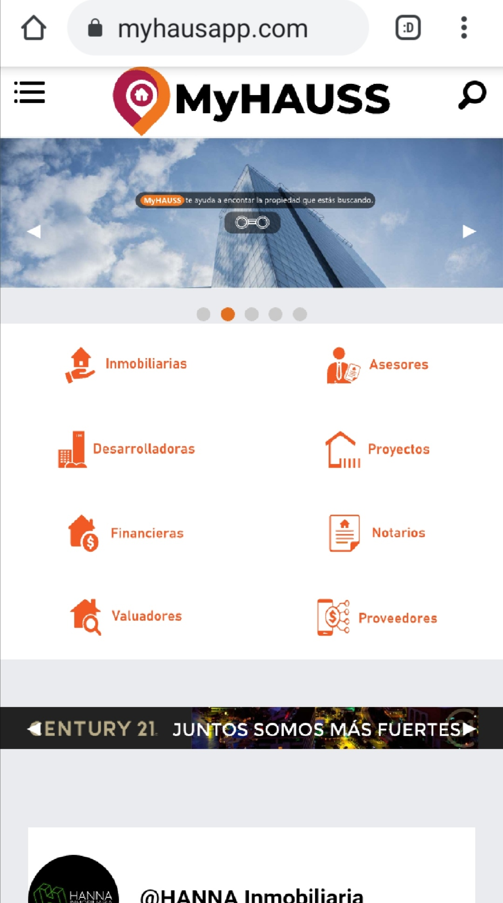

Buscas algún programador o diseñador gráfico para tus proyectos...?, Deseas desarrollar una página web o una aplicación para teléfono, te preocupa la seguridad de tu página web o quieres mejorar tu página y su posicionamiento.
Te puedo ayudar en ello, estoy a tus ordenes para realizar el trabajo o ajuste que deseas, tengo la habilidad y experiencia que buscas.
Las actividades que se realizar son las siguientes.
* Diseño y desarrollo de páginas web.
* Diseño y desarrollo de aplicaciones móviles.
* Mantenimiento en equipo de cómputo (preventivo y correctivo).
* Diseño y desarrollo de videojuegos.
* Analisis de datos.
* Diseño grafico.
Las actividadesd que realice durante mi estadia en la empresa MYHAUSS fueron diseñar mediante las especificaciones de los clientes y una breve entrevista. Se desarrollo una página web con la cual sus clientes pueden obtener información sobre sus actividades que realizan, ponerse en contacto con ellos e incluso vender sus productos desde la misma página, al igual que se desarrollo un chat en vivo y un sistema de puntuación para asi saber más sobre la preferencia de sus clientes en los productos .
Durante mi estadia en la empresa Gauss realice continuos diseños, analisis de datos y programación de diferentes aplicaciones, paginas web, aplicaciones móviles, al igual que se realizaban multiples entrevistas con las cuales se obtenia la información requerida y se hacian multiples prototipos para la presesntación con ello obtener la aprobación de los clientes.
Calificación promedio: 9.5
Calificación promedio: 9.0
Pará brindar una mayor seguridad y tranquilidad para los clientes se limita las imajenes dentro de la galeria y sus especificaciones.
Se desarrolló una página web para brindar a los clientes información sobre el giro comercial que llevan a cabo, un método para contactarlos y poder comprar u ofrecer sus servicios dentro de la misma.
Se creó una plataforma para alumnos de un colegio para poder entregar trabajos como poder comunicarse con los profesores y participar en eventos de la escuela.
Desarrolle una plataforma para la escuela de San sebastián con el cual las personas se pueden registrar en los cursos que se implementan y dar información sobre horarios, costos y quien las imparten.
Con el apoyo del personal del bar de Eddy´s se logró crear una aplicación para poder dar a conocer a sus clientes sus productos y vender al igual que entregar un sistema en el cual se puede monitorear el flujo de las ventas.
Se implementó un sistema para poder ofrecer sus productos farmacéuticos y asi venderlos desde una plataforma segura.